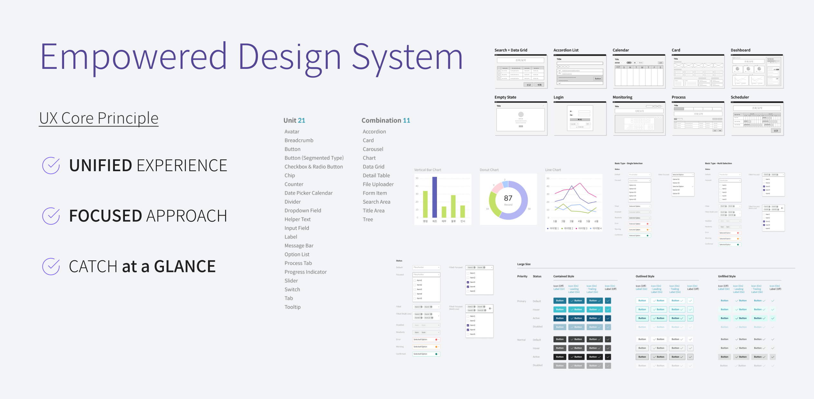
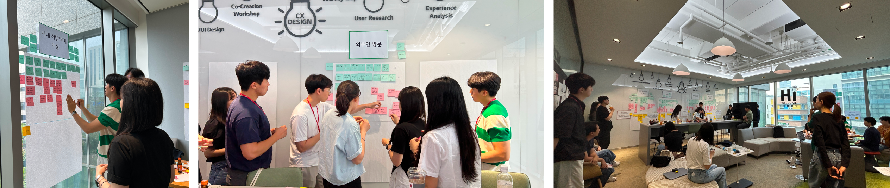
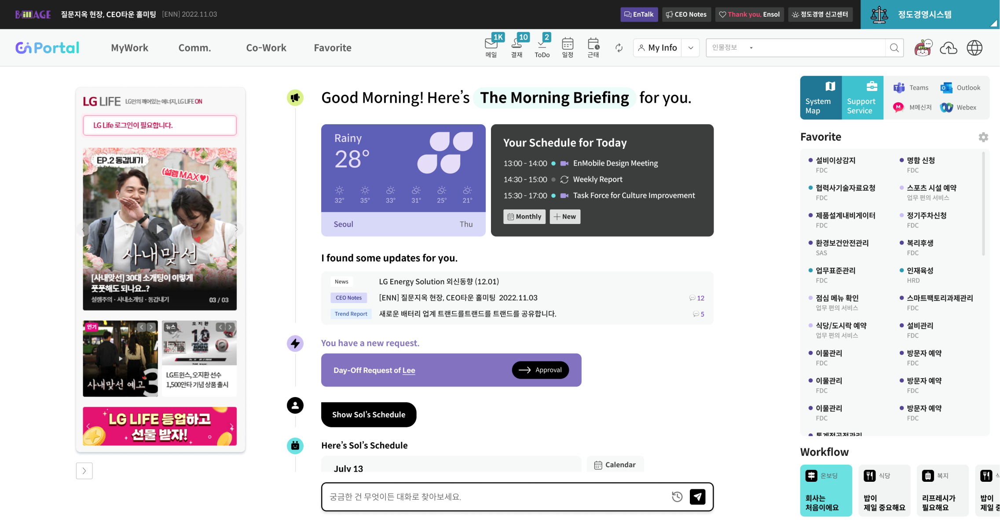

Design System & Employee Experience Improvement for LG Energy Solution
Summary
After joining LG CNS, I spent 12 months as a UX Subject Matter Expert (SME) in the Innovation Studio, a
division dedicated to discovering and developing digital transformation services. During this time, I
participated in six workshops across the logistics, metaverse, and finance sectors. I guided participants in
transforming their ideas into user-centric solutions, ensuring the developed concepts were practical,
impactful, and aligned with real-world user needs and organizational goals.
Period
Apr 2023 - Mar 2024
12 months
Client
LG Energy Solution
My Role
UXUI Design
UX Strategy
Team
UXUI Designer : 2
Publisher : 1
Developers : 10
Reflection
“Test Comment Test Comment Test Comment Test Comment Test Comment Test Comment Test Comment Test Comment
Test Comment Test Comment Test Comment Test CommentTest Comment Test Comment Test Comment Test Comment Test
Comment”
Context
This project started as a 3-month effort to create a design system for manufacturing systems. The client
was highly satisfied with the deliverables and recognized the importance of UX/UI across LG Energy Solution.
As a result, the project expanded to improving EnPortal, the Employee Portal used by over 10,000 employees.
Over 12 months, I participated in all phases and contributed to enhancing the employee experience through
various UX/UI tasks.
Design System Foundation
Standardized UI/UX by defining screen patterns and developing cohesive design assets
and templates.
12 weeks
Redefine UX for EnPortal
Developed a user-centric concept for EnPortal’s home, introducing AI-driven
conversational UX to streamline access to 120 systems via a single input field.
12 weeks
UX/UI Optimization
Enhanced and optimized UX/UI of EnPortal overall, improving workflows and user
experience across key systems for over 10,000 users.
24 weeks
Phase 1
Design System Foundation
12 weeks

Challenge & Approach
The existing 20 manufacturing PI systems had inconsistent UI patterns and lacked key UX
elements like
accessibility and intuitive navigation, negatively impacting employee efficiency.
To address these gaps
We analyzed usability issues using six major criteria and identified key areas for improvement.
Unified foundational design standards were established, including button layouts, labeling rules, and
navigation patterns.
Delivered 263 UI/UX standards and 1,200+ reusable assets to ensure consistency and scalability across
systems. This resulted in improved workflows, seamless navigation, and enhanced employee satisfaction.
Phase 2
Redefine UX for EnPortal
12 weeks
Co-Creation Workshop
Through a Co-Creation Workshop with LG Energy Solution's junior employees, we developed
various service
ideas to improve the EnPortal employee portal. The outcomes of this workshop were used to redefine
EnPortal in Phase 2 and key systems improvement in Phase 3.

Zero Depth UX
Immediate task processing with seamless interactions.
Personalized Work-Life Hub
A unified dashboard tailored for your tasks and updates.
Care UX
Intuitive, user-first design for effortless navigation and accessibility.
Smart Search
Context-aware search for faster, more accurate results.
Challenge & Approach
Through stakeholder interviews and a Co-Creation Workshop, we extracted insights and
proposed several new
portal UX concepts. However, EnPortal was already operational, and the client repeatedly expressed
concerns about how impactful the proposed main design would truly be.
How might we transform the EnPortal main into a true 'home'
where employees turn to whenever they have questions at work?
Instead of simply maintaining the existing layout, we decided to take a bolder approach.
The
main page
needed to be more than just a gateway to other systems — it had to become the center of curiosity and
engagement, a place where employees could always find answers or complete tasks without hesitation. To
achieve this, we pursued a conversational portal concept.

Phase 3
UX/UI Optimization
24 weeks
Challenge & Approach
With the design system established in Phase 01, we faced the challenge of applying
standardized styles and patterns across 15 key menus and systems, including Approval, System Map, and Who
(Expert Search), as well as the EnMobile app. Employees and stakeholders had raised diverse feedback,
highlighting inconsistencies and inefficiencies in existing UX/UI.
To resolve these issues, we needed to
ensure alignment between design standards and operational requirements across systems.
To address this, we:
Conducted a comprehensive UX/UI optimization process, refining and applying the design system to
enhance consistency and usability across all touchpoints.
Collaborated closely with system owners and developers for each menu/system, ensuring clear
communication and alignment despite differing requirements and priorities.
Tackled the challenges of multilingual environments (e.g., Polish, Chinese, and English), resolving
localization issues to create a seamless user experience.
Focused on maintaining the flexibility of the design system while ensuring all modifications were
scalable and sustainable.